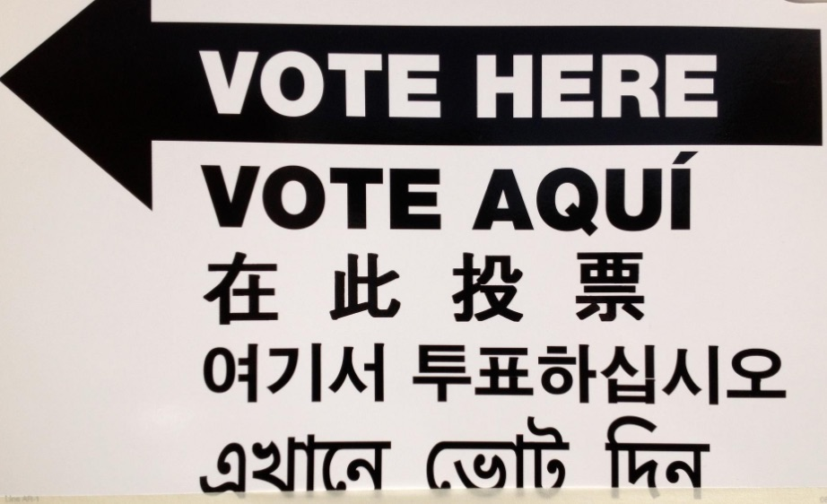

In New York, a conviction does not take your vote for good. The only time a conviction stops you from voting is while you are in prison for a felony. If you are home, on parole, on probation, or never went to prison, you can register and vote in the November 3 general election. The catch is registration. If you went to prison on a felony, your old registration was likely cancelled, and the deadline to register again is Saturday, October 24.
What the law says
The rule is in Election Law § 5-106. A person sentenced to prison for a New York felony can't register or vote "while he or she is incarcerated for such felony." The same rule covers federal felonies and out-of-state convictions that would be felonies here. Once you are released, the bar is gone.
That has been true since May 4, 2021, when Chapter 103 of the Laws of 2021 was signed. Before it, people on parole had to wait. The sponsor's memo describes the change as restoring voting rights "rather than requiring a parolee to wait until he or she has been discharged from parole."
Who can vote right now
- ✓ Can vote
On parole
Since May 2021.
- ✓ Can vote
On probation
The prison bar doesn't apply to anyone who wasn't sentenced to prison, or whose prison sentence was suspended.
- ✓ Can vote
Sentence finished
Register again if your old registration was cancelled.
- ✓ Absentee ballot
In jail awaiting trial or a grand jury
Election Law § 8-400 covers anyone "detained in jail awaiting action by a grand jury or awaiting trial."
- ✓ Absentee ballot
In jail or prison on a misdemeanor
The same section covers anyone "confined in jail or prison after a conviction for an offense other than a felony."
- ✕ Not until release
In prison on a felony sentence
The right comes back on release.
You probably have to register again
Getting your right back does not put you back on the rolls. Election Law § 5-400 says a registration "shall be cancelled" when the voter "was convicted of a felony disqualifying him from voting" under § 5-106. So if you went to prison on a felony, assume your old registration is gone and file a new one.
Check first. The state's voter lookup shows whether you are registered and where you vote. In New York City you can also use the Board of Elections search at vote.nyc. If nothing comes up, register.

What the state is supposed to give you at release
The 2021 law put the notice on the state. Under the bill's text, a person leaving a state prison is to be told "verbally and in writing" that their voting rights will be restored on release, handed a voter registration application and a declination form, and offered help filling out the right one. If you left without any of that, the right is still yours. The paperwork just didn't get to you.
General information, not legal advice
This explains how the law generally works. If your situation is unusual, such as a conviction from another state or a sentence still being served in a way not described here, confirm with your county board of elections before you rely on it.
The dates for November 3
From NYC Votes and the state Board of Elections:
- Sat, October 24Last day to register or update your registration, and the last day to request a mail ballot online or by mail.
- October 24 to November 1Early voting. Hours vary by county.
- Mon, November 2Last day to request a mail ballot in person.
- Tue, November 3Election Day. Polls are open 6am to 9pm.
The exact question to ask
Ask your county board of elections before October 24: "Is my registration active at my current address for the November 3 election?" If the answer is that there's no record, or that it was cancelled, register that day. Being told you are "probably fine" is not an answer to that question.